OTIUM is the practice of deliberate leisure. In the classical sense, otium is not escape from work but time when attention returns to memory, landscape, and thought — without a utilitarian deadline.
We shape routes for lingering, not for checklist tourism. The goal is presence in a place rather than consumption of sights.
OTIUM is not a tour operator. It is an invitation to walk, pause, and leave a route unfinished if the light on a façade deserves another minute.
Исторические и справочные гербы
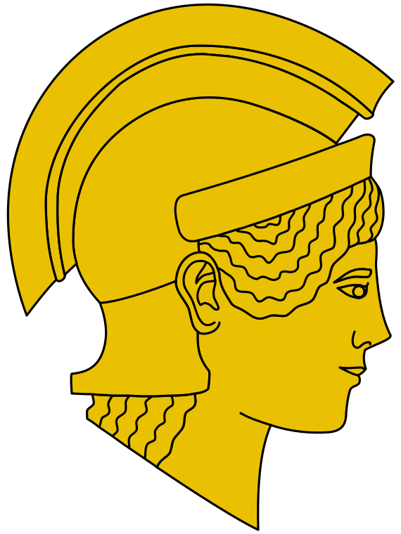
Guide. Places in this edition: 12.
Афины — столица Греции, один из древнейших европейских городов с непрерывной историей поселения.
Античный полис, римский и византийский периоды, османская эпоха и независимое государство сформировали слойную городскую среду: акрополь, классические руины, неоклассика и XX век. Афины остаются узлом культуры, образования и средиземноморской метрополии.
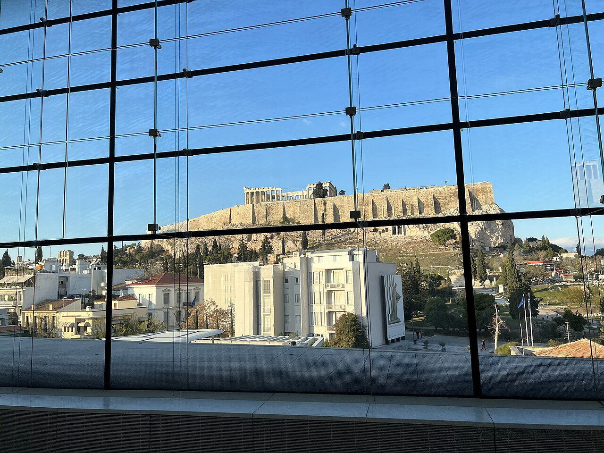
Purpose-built museum for Parthenon sculptures and slope finds, with views up to the Acropolis rock.
Replaced cramped hilltop rooms; the design debates still shape discussions on repatriation of marbles.
Essential context before or after climbing the Acropolis.
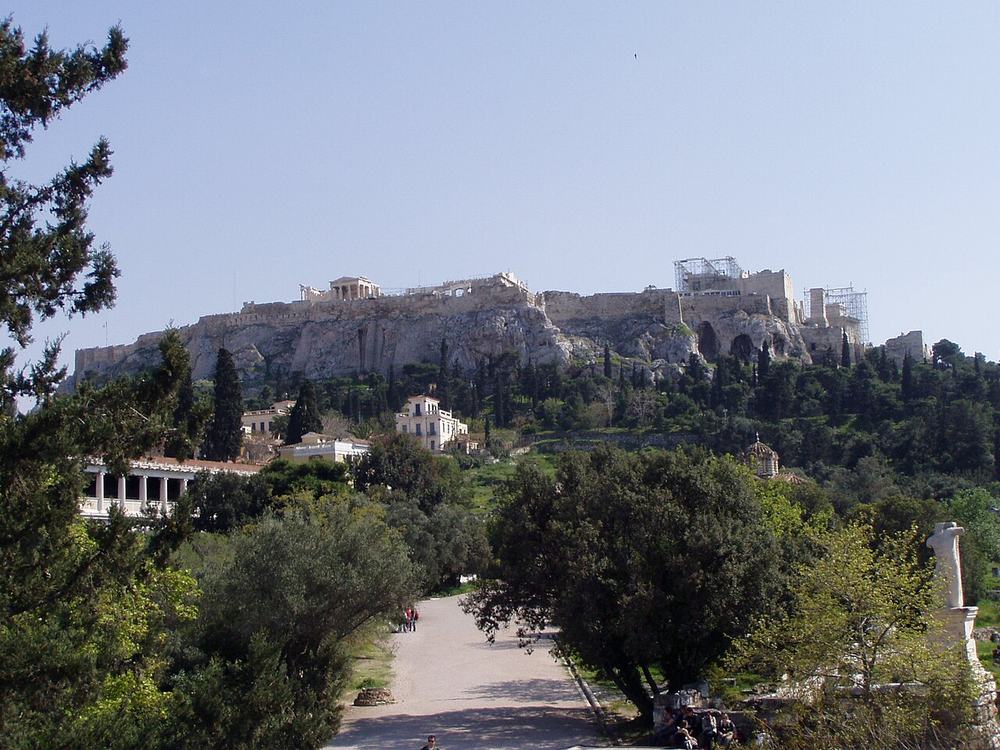
Civic heart where assemblies met, shops lined stoas, and philosophers taught. Hephaisteion temple rises intact on the hillock.
Classical democracy's open-air offices; Roman rebuilds followed sacks and earthquakes.
Walkable archaeology linking myth, democracy, and daily commerce.
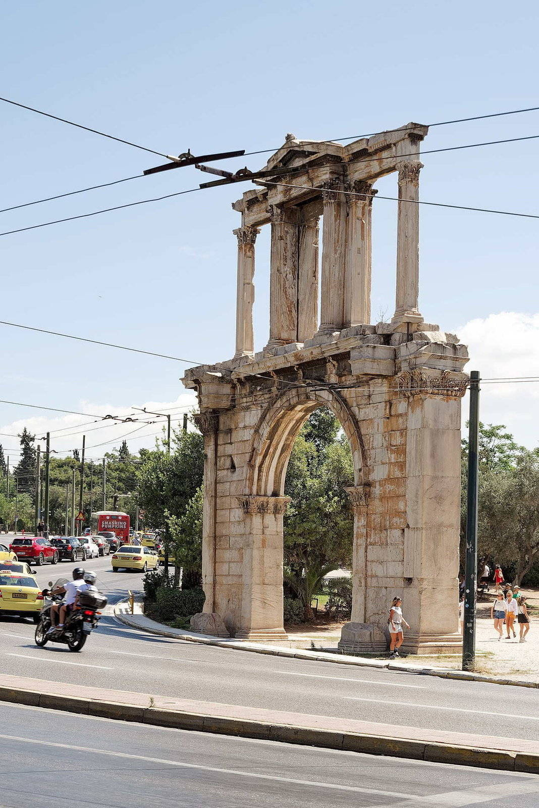
Marble gateway marking the boundary between old city of Theseus and Hadrian's newer Athens.
Erected to celebrate Hadrian's benefactions including the nearby Olympeion completion.
Readable symbol of imperial Roman urban expansion.
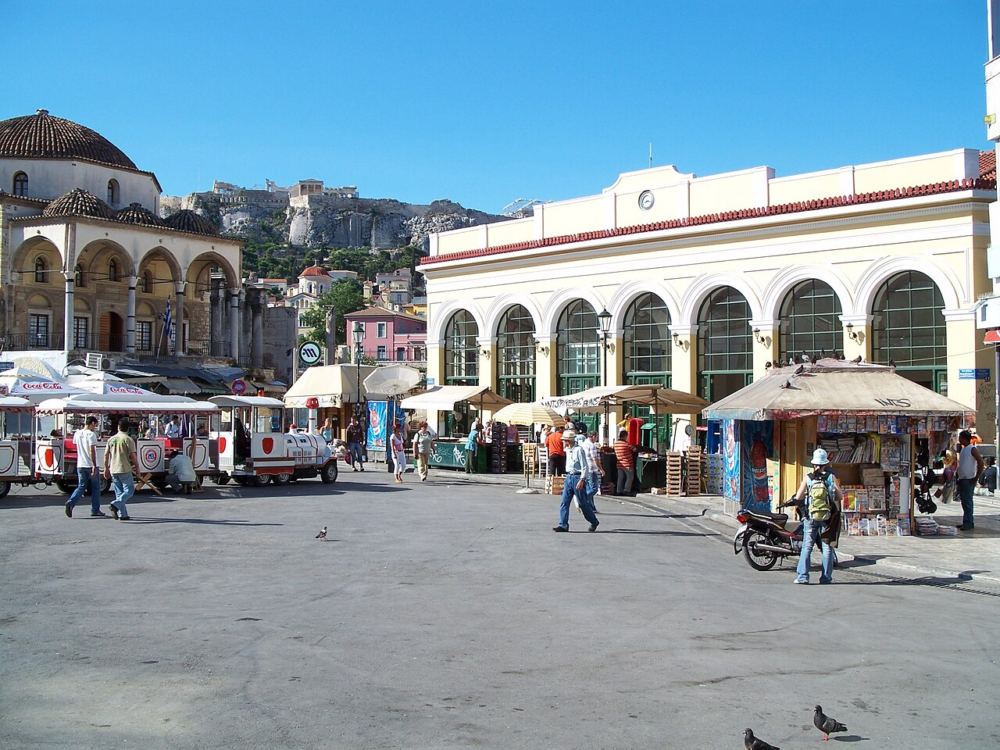
Flea market streets, souvlaki counters, and rooftop bars with Acropolis views around Monastiraki station.
Named for a small monastery demolished in the 18th century; the square stayed a commercial hinge.
Transit hub between Plaka, Psiri, and the ancient Agora.
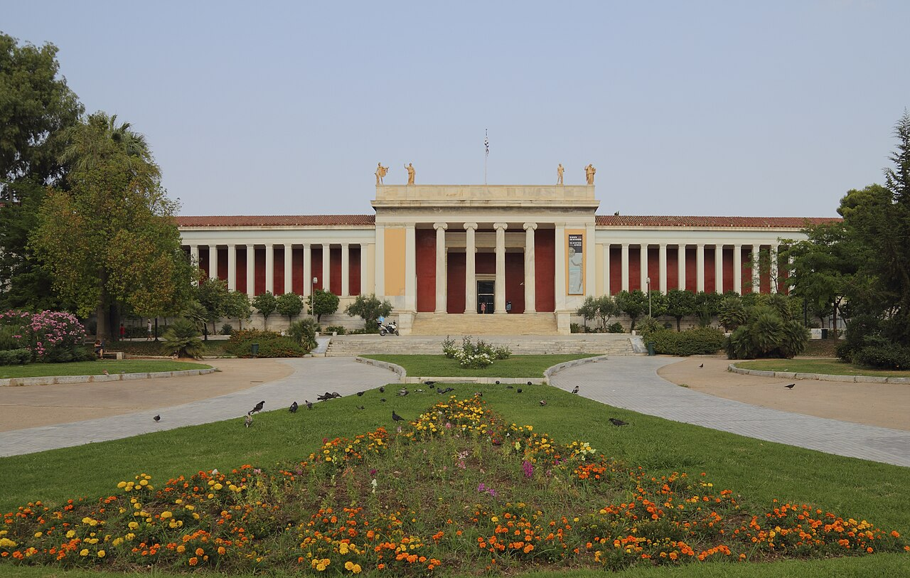
Flagship collection of Greek antiquity from prehistory through late Roman bronzes and frescoes.
Founded to house growing national excavations after independence.
The single best overview of Greek material culture.
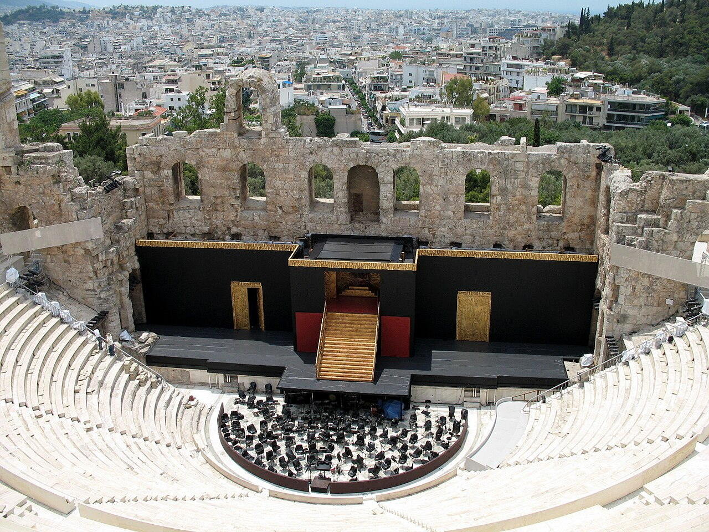
Stone Roman odeon restored for summer Athens Epidaurus Festival performances under the lit Acropolis rock face.
Ruined roof and upper cavea were rebuilt in the 20th century to revive large-scale music and drama.
The romantic night shot every visitor recognises from the path up to the Propylaea.
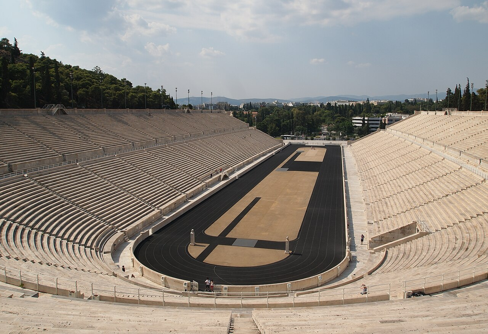
All-marble stadium that hosted the 1896 Olympic revival. Audio guides explain starting line grooves and royal boxes.
Lycurgus-era limestone tiers were clad in Herodes Atticus marble; excavators cleared silt after centuries of burial.
Physical link between ancient Panathenaia festival and modern Olympic narrative.
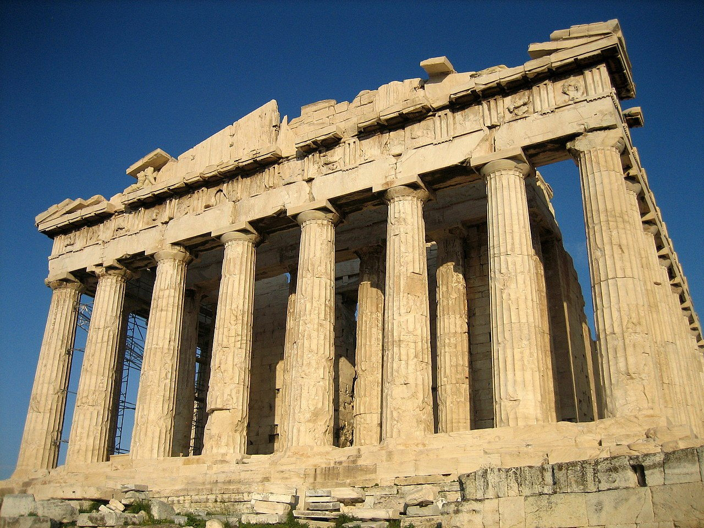
Temple of Athena Parthenos crowning the Acropolis. Ongoing conservation scaffolding shifts with each campaign.
Periclean building programme replaced older temples destroyed by the Persians; later conversions included church and mosque phases.
Canonical image of Classical Greece and democratic-city identity.
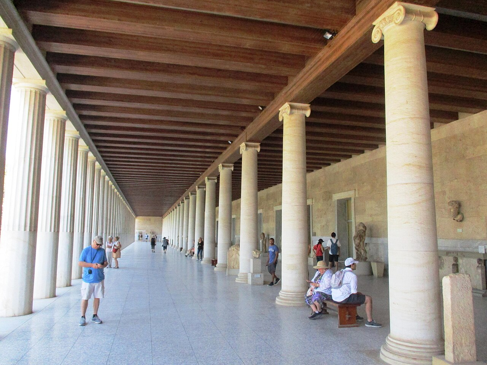
American School reconstruction housing agora small finds—pottery, ballots, weights—with shaded upper walkway views.
Original stoa displayed royal patronage; the modern copy proves controversial yet didactic for visitors.
Best place to connect objects to the rubble plan below your feet.
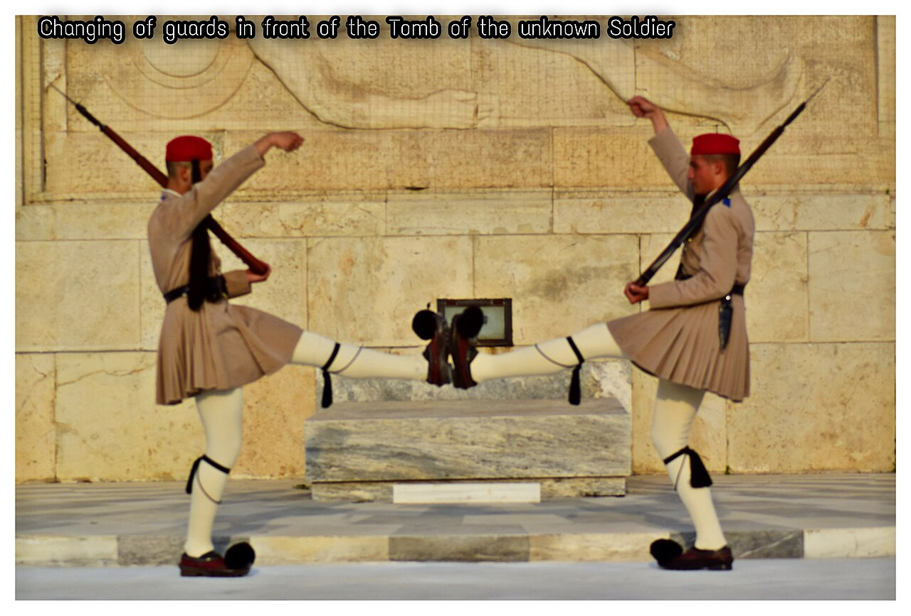
Parliament frontage where Evzones perform the changing of the guard at the Tomb of the Unknown Soldier.
Named after the 1843 constitution granted after popular demonstration at the palace gates.
Modern Athens' default protest and celebration plaza.
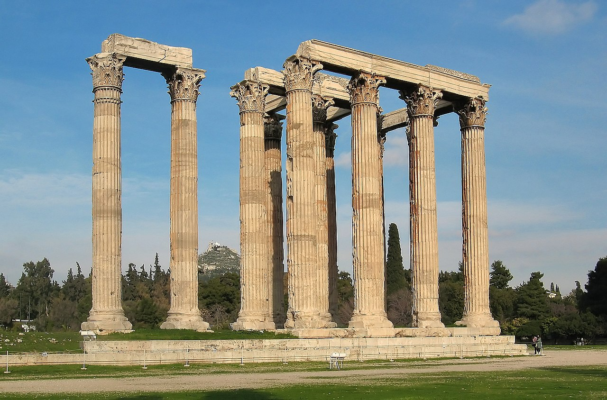
Ruined sanctuary once housing a colossal chryselephantine cult image; a few towering columns remain.
Peisistratid foundations waited centuries for Roman completion under Hadrian.
Scale reference for imperial Roman Athens.
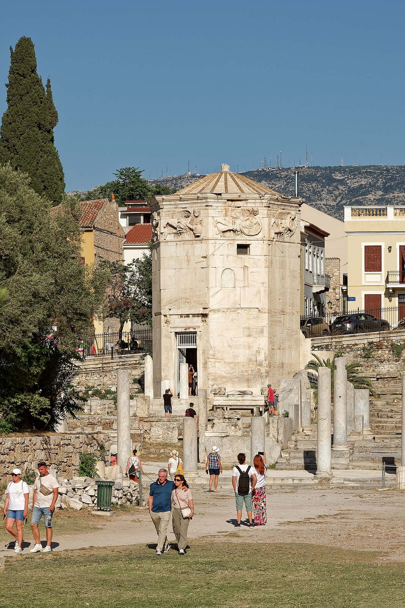
Marble octagon combining sundials, water clock, and wind vane personifications on each side.
Attributed to Andronikos of Kyrrhos; among the best-preserved ancient timekeeping structures.
Unique fusion of meteorology, astronomy, and civic pride.